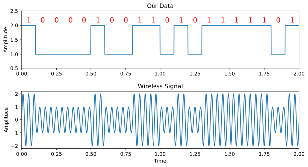
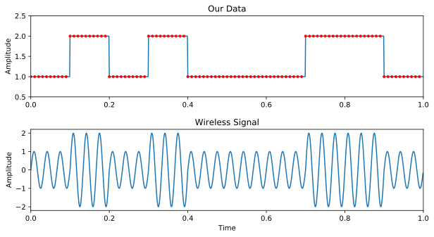
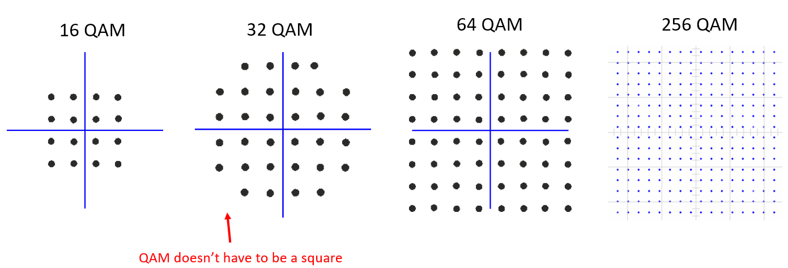
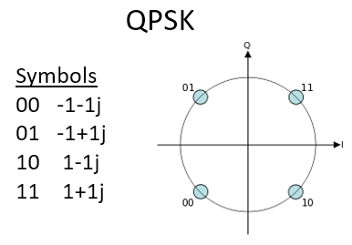
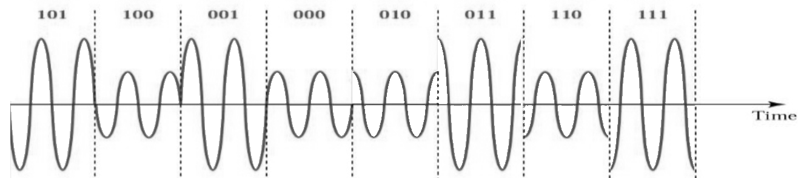
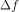
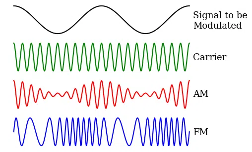
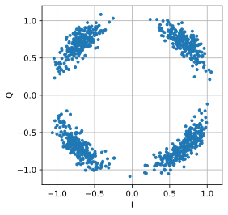

4. Modulation numérique¶
Dans ce chapitre, nous aborderons la transmission réelle de données à l’aide de la modulation numérique et des symboles sans fil! Nous concevrons des signaux qui transmettent des “informations”, par exemple des 1 et des 0, en utilisant des schémas de modulation comme ASK, PSK, QAM et FSK. Nous aborderons également les diagrammes et constellations IQ et terminerons le chapitre par quelques exemples Python.
L’objectif principal de la modulation est de faire rentrer le maximum de données dans le moins de spectre possible. Techniquement parlant, nous voulons maximiser “l’efficacité spectrale” en unités bits/sec/Hz. Transmettre des 1 et des 0 plus rapidement augmentera la largeur de bande de notre signal (rappelons les propriétés de Fourier), ce qui signifie que davantage de spectre est utilisé. Nous allons également examiner d’autres techniques que la transmission plus rapide. Il y aura de nombreux compromis à faire pour décider de la façon de moduler, mais il y aura aussi de la place pour la créativité.
Symboles¶
Alerte au nouveau terme! Notre signal de transmission va être composé de “symboles”. Chaque symbole transporte un certain nombre de bits d’information, et nous transmettons des symboles les uns après les autres, par milliers, voire par millions.
Pour simplifier, disons que nous avons un fil et que nous envoyons des 1 et des 0 en utilisant des niveaux de tension élevés et faibles. Un symbole est l’un de ces 1 ou 0:

Dans l’exemple ci-dessus, chaque symbole représente un bit. Comment pouvons-nous transmettre plus d’un bit par symbole? Étudions les signaux qui circulent dans les câbles Ethernet, définis par une norme IEEE appelée IEEE 802.3 1000BASE-T. Le mode de fonctionnement commun d’Ethernet utilise une modulation d’amplitude à 4 niveaux (2 bits par symbole) avec des symboles de 8 ns.

Prenez un moment pour essayer de répondre à ces questions :
- Combien de bits par seconde sont transmis dans l’exemple ci-dessus ?
- Combien de paires de ces fils de données seraient nécessaires pour transmettre 1 gigabit/seconde ?
- Si un schéma de modulation comporte 16 niveaux différents, combien de bits par symbole cela représente-t-il ?
- Avec 16 niveaux différents et des symboles de 8 ns, combien de bits par seconde cela représente-t-il ?
Réponses
- 250 Mbps - (1/8e-9)*2
- Quatre (ce qui est le cas des câbles ethernet)
- 4 bits par symbole - log_2(16)
- 0,5 Gbps - (1/8e-9)*4
Symboles sans fils¶
Question : Pourquoi ne pouvons-nous pas transmettre directement le signal Ethernet illustré dans la figure ci-dessus? Il y a de nombreuses raisons, les deux plus importantes étant :
- Les basses fréquences nécessitent des antennes énormes.
- Les ondes carrées prennent une quantité excessive de spectre pour les bits par seconde - rappelez-vous du chapitre Het Frequentiedomein que les changements brusques dans le domaine temporel utilisent une grande quantité de bande/spectre :

Pour les signaux sans fil, nous commençons par une porteuse, qui est juste une sinusoïde. Par exemple, la radio FM utilise une porteuse comme 101,1 MHz ou 100,3 MHz. Nous modulons cette porteuse d’une manière ou d’une autre (il y en a plusieurs). Pour la radio FM, il s’agit d’une modulation analogique, et non numérique, mais c’est le même concept que la modulation numérique.
De quelles manières pouvons-nous moduler la porteuse? Autre façon de poser la même question: quelles sont les différentes propriétés d’une sinusoïde?
- Amplitude
- Phase
- Fréquence
Nous pouvons moduler nos données sur une porteuse en modifiant l’un (ou plusieurs) de ces trois éléments.
Modulation par déplacement d’amplitude¶
Modulation par déplacement d’amplitude (ou ASK en anglais pour Amplitude Shift Keying) est le premier schéma de modulation numérique que nous allons aborder car la modulation d’amplitude est la plus simple à visualiser parmi les trois propriétés des sinusoïdes. Nous modulons littéralement l’ amplitude de la porteuse. Voici un exemple de modulation par déplacement d’amplitude à deux niveaux, appelé 2-ASK:
Notez que la valeur moyenne est égale à zéro, ce que nous préférons dans la mesure du possible.
Nous pouvons utiliser plus de deux niveaux, ce qui permet d’avoir plus de bits par symbole. L’exemple ci-dessous montre un exemple de 4-ASK. Dans ce cas, chaque symbole porte 2 bits d’information.

Question: Combien de symboles sont représentés dans l’extrait de signal ci-dessus? Combien de bits sont représentés au total?
Réponse
20 symboles, donc 40 bits d’information
Comment créer réellement ce signal numériquement, par le biais d’un code? Tout ce que nous avons à faire est de créer un vecteur avec N échantillons par symbole, puis de multiplier ce vecteur par une sinusoïde. Cela module le signal sur une porteuse (la sinusoïde agit comme cette porteuse). L’exemple ci-dessous montre un 2-ASK avec 10 échantillons par symbole.
Le graphique du haut montre les échantillons discrets représentés par des points rouges, c’est-à-dire notre signal numérique. Le graphique du bas montre à quoi ressemble le signal modulé résultant, qui pourrait être transmis par voie aérienne. Dans les systèmes réels, la fréquence de la porteuse est généralement beaucoup plus élevée que la vitesse à laquelle les symboles changent. Dans cet exemple, il n’y a que trois cycles de la sinusoïde dans chaque symbole, mais dans la pratique, il peut y en avoir des milliers, en fonction de la hauteur du spectre dans lequel le signal est transmis.
Modulation par déplacement de phase¶
Envisageons maintenant de moduler la phase de la même manière que nous l’avons fait pour l’amplitude. La forme la plus simple est la modulation PSK binaire, aussi appelée BPSK, où il y a deux niveaux de phase:
- Pas de changement de phase
- Changement de phase à 180 degrés
Exemple de BPSK (notez les changements de phase):

Ce n’est pas très amusant de regarder des graphiques comme celui-ci:

Au lieu de cela, nous représentons habituellement la phase dans le plan complexe.
Diagrammes IQ/Constellations¶
Vous avez déjà vu des diagrammes IQ dans la sous-section sur les nombres complexes du chapitre IQ-sampling, mais maintenant nous allons les utiliser d’une manière nouvelle et amusante. Pour un symbole donné, nous pouvons montrer l’amplitude et la phase sur un diagramme IQ. Pour l’exemple BPSK, nous avons dit que nous avions des phases de 0 et 180 degrés. Traçons ces deux points sur le diagramme IQ. Nous supposerons que l’amplitude est de 1. Dans la pratique, l’amplitude utilisée n’a pas vraiment d’importance; une valeur plus élevée signifie un signal plus puissant, mais vous pouvez également augmenter le gain de l’amplificateur.

Le diagramme IQ ci-dessus montre ce que nous allons transmettre, ou plutôt l’ensemble des symboles à partir desquels nous allons transmettre. Il ne montre pas la porteuse, vous pouvez donc considérer qu’il représente les symboles en bande de base. Lorsque nous montrons l’ensemble des symboles possibles pour un schéma de modulation donné, nous l’appelons la “constellation”. De nombreux schémas de modulation peuvent être définis par leur constellation.
Pour recevoir et décoder la BPSK, nous pouvons utiliser l’échantillonnage IQ, comme nous l’avons appris au chapitre précédent, et examiner où les points aboutissent sur le diagramme IQ. Cependant, il y aura une rotation de phase aléatoire due au canal sans fil car le signal aura un certain retard aléatoire lorsqu’il passe dans l’air entre les antennes. La rotation de phase aléatoire peut être inversée à l’aide de diverses méthodes que nous verrons plus tard. Voici un exemple de différentes façons dont un signal BPSK peut apparaître dans le récepteur (sans tenir compte du bruit) :

Retour au PSK. Et si nous voulions quatre niveaux de phase différents? C’est-à-dire 0, 90, 180 et 270 degrés. Dans ce cas, cela serait représenté comme suit sur le diagramme IQ, et cela forme un schéma de modulation que nous appelons modulation par déplacement de phase en quadrature (ou QPSK en anglais pour Quadrature Phase Shift Keying):

Pour la PSK, nous avons toujours N phases différentes, également espacées sur 360 degrés pour obtenir les meilleurs résultats. Nous montrons souvent le cercle unitaire pour souligner que tous les points ont la même magnitude:

Question: Qu’y a-t-il de mal à utiliser un schéma PSK comme celui de l’image ci-dessous? S’agit-il d’un schéma de modulation PSK valide?

Réponse
Il n’y a rien d’invalide dans ce schéma PSK. Vous pouvez certainement l’utiliser, mais, comme les symboles ne sont pas uniformément espacés, ce schéma n’est pas aussi efficace qu’il pourrait l’être. L’efficacité du schéma deviendra claire lorsque nous aborderons l’impact du bruit sur nos symboles. En résumé, nous voulons laisser le plus d’espace possible entre les symboles, au cas où il y aurait du bruit, afin qu’un symbole ne soit pas interprété par le récepteur comme l’un des autres symboles (incorrects). Nous ne voulons pas qu’un 0 soit reçu comme un 1.
Revenons un instant sur ASK. Notez que nous pouvons montrer l’ASK sur le diagramme IQ tout comme pour la PSK. Voici le tracé IQ de 2-ASK, 4-ASK, et 8-ASK, dans la configuration bipolaire, ainsi que 2-ASK et 4-ASK dans la configuration unipolaire.

Comme vous l’avez peut-être remarqué, 2-ASK bipolaire et BPSK sont identiques. Un déphasage de 180 degrés équivaut à multiplier la sinusoïde par -1. Nous l’appelons BPSK, probablement parce que la BPSK est beaucoup plus utilisée que l’ASK.
Modulation d’amplitude en quadrature¶
Et si nous combinions ASK et PSK? Nous appelons ce schéma de modulation modulation d’amplitude en quadrature (ou QAM en anglais pour *Quadrature Amplitude Modulation *). La QAM ressemble généralement à ceci :

Voici d’autres exemples de QAM:
{kind=link}
Pour un schéma de modulation QAM, nous pouvons techniquement placer des points où nous le souhaitons sur le diagramme IQ puisque la phase et l’amplitude sont modulées. Les “paramètres” d’un schéma QAM donné sont mieux définis en montrant la constellation QAM. Vous pouvez également indiquer les valeurs I et Q pour chaque point, comme ci-dessous pour la QPSK :
{kind=link}
Notez que la plupart des schémas de modulation, à l’exception des diverses ASK et BPSK, sont assez difficiles à “voir” dans le domaine temporel. Pour prouver mon propos, voici un exemple de QAM dans le domaine temporel. Pouvez-vous distinguer la phase de chaque symbole dans l’image ci-dessous ? C’est difficile.
{kind=link}
Étant donné la difficulté de discerner les schémas de modulation dans le domaine temporel, nous préférons utiliser des diagrammes IQ plutôt que d’afficher le signal dans le domaine temporel. Nous pouvons néanmoins montrer le signal dans le domaine temporel s’il y a une certaine structure de paquets ou si la séquence des symboles est importante.
Modulation par déplacement de fréquence¶
La dernière sur la liste est la modulation par déplacement de fréquence (ou FSK en anglais pour Frequency Shift Keying). La FSK est assez simple à comprendre: nous nous déplaçons simplement entre N fréquences, chaque fréquence représentant un symbole possible. Cependant, comme nous modulons une porteuse, il s’agit en fait de notre fréquence porteuse +/- ces N fréquences. Par exemple, nous pourrions être sur une porteuse de 1.2 GHz et nous déplacer entre ces quatre fréquences :
- 1.2005 GHz
- 1.2010 GHz
- 1.1995 GHz
- 1.1990 GHz
L’exemple ci-dessus serait une 4-FSK, et il y aurait deux bits par symbole. Un signal 4-FSK dans le domaine fréquenciel pourrait ressembler à ceci :

Si vous utilisez le FSK, vous devez vous poser une question essentielle: Quel doit être l’espacement entre les fréquences? Nous désignons souvent cet espacement par  en Hz. Nous voulons éviter le chevauchement dans le domaine des fréquences, donc doit être suffisamment grand. La largeur de chaque porteuse en fréquence est fonction de notre débit de symboles. Plus de symboles par seconde signifie des symboles plus courts, ce qui signifie une largeur de bande plus large (rappelez-vous la relation inverse entre l’échelle de temps et de fréquence). Plus nous transmettons de symboles, plus chaque porteuse sera large, et par conséquent plus nous devrons augmenter pour éviter le chevauchement des porteuses. Nous n’entrerons pas dans les détails de la conception de la FSK dans ce manuel.
Les diagrammes IQ ne peuvent pas être utilisés pour montrer des fréquences différentes. Ils montrent la magnitude et la phase. Bien qu’il soit possible de représenter la FSK dans le domaine temporel, il est difficile de distinguer les symboles s’il y a plus de deux fréquences :

En passant, notez que la radio FM utilise la modulation de fréquence (FM) qui est comme une version analogique de la FSK. Au lieu d’avoir des fréquences discrètes entre lesquelles nous sautons, la radio FM utilise un signal audio continu pour moduler la fréquence de la porteuse. Vous trouverez ci-dessous un exemple de modulation FM et AM où le “signal” en haut est le signal audio modulé sur la porteuse.
Dans ce manuel, nous nous intéressons principalement aux formes numériques de modulation.
Codage différentiel¶
Dans de nombreux protocoles de communication sans fil (et filaires), vous êtes susceptible de rencontrer ce que l’on appelle le codage différentiel. Pour démontrer son utilité, considérons la réception d’un signal BPSK. Lorsque le signal se déplace dans l’air, il subit un retard aléatoire entre l’émetteur et le récepteur, ce qui entraîne une rotation aléatoire de la constellation, comme nous l’avons mentionné précédemment. Lorsque le récepteur se synchronise sur ce signal et aligne la BPSK sur l’axe “I”, il n’a aucun moyen de savoir si elle est déphasée de 180 degrés ou non, car la constellation a la même apparence. Ainsi, au lieu de devoir envoyer des symboles pilotes pour lui faire savoir quelle groupe représente 1 et quelle groupe représente 0, il peut choisir d’utiliser le codage différentiel et ne pas s’en soucier. L’utilisation du codage différentiel nous permet également d’utiliser un récepteur non cohérent qui est plus simple que les récepteurs cohérents.
Dans sa forme la plus élémentaire, qui est celle utilisée pour la BPSK, le codage différentiel consiste à transmettre un 0 lorsque le bit d’entrée est le même que le bit de sortie précédent, et à transmettre un 1 lorsqu’ils diffèrent. Nous transmettons donc toujours le même nombre de bits (sauf qu’un bit supplémentaire est nécessaire au début pour commencer la séquence de sortie), mais nous n’avons plus à nous soucier de l’ambiguïté de phase de 180 degrés. Pour démontrer comment cela fonctionne, considérons la transmission de la séquence de bits [1, 1, 0, 0, 0, 1, 0] en utilisant la BPSK. Supposons que nous commencions la séquence de sortie par 1; en fait, peu importe que vous utilisiez 1 ou 0. Après avoir appliqué le codage différentiel, nous transmettrions finalement [1, 0, 1, 1, 1, 1, 0, 0]. Les 1 et les 0 sont toujours associés aux symboles positifs et négatifs dont nous avons parlé précédemment. Il est peut-être plus facile de visualiser les séquences d’entrée et de sortie empilées comme ceci:
[1, 1, 0, 0, 0, 1, 0] # avant codage différentiel (données originales)
[1, 0, 1, 1, 1, 1, 0, 0] # après le codage différentiel (ce que nous transmettons)
Le gros inconvénient de l’utilisation du codage différentiel est que si vous avez une erreur de bit, cela entraînera deux erreurs de bit. L’alternative à l’utilisation du codage différentiel pour la BPSK est d’ajouter périodiquement des symboles pilotes, qui sont des symboles déjà connus du récepteur, et celui-ci peut utiliser les valeurs connues pour non seulement déterminer quel cluster est 1 et lequel est 0, mais aussi inverser les trajets multiples causés par le canal. Un problème avec les symboles pilotes est que le canal sans fil peut changer très rapidement, de l’ordre de dizaines ou de centaines de symboles s’il s’agit d’un récepteur et/ou d’un émetteur en mouvement, de sorte qu’il faudrait des symboles pilotes suffisamment fréquents pour refléter l’évolution du canal. Ainsi, si un protocole sans fil met l’accent sur la réduction de la complexité du récepteur, comme le RDS que nous étudions dans le chapitre Compleet voorbeeld, il peut choisir d’utiliser le codage différentiel.
Exemple Python¶
À titre d’exemple Python, générons une QPSK en bande de base et traçons la constellation.
Bien que nous puissions générer les symboles complexes directement, partons du principe que la QPSK possède quatre symboles à des intervalles de 90 degrés autour du cercle unitaire. Nous utiliserons 45, 135, 225 et 315 degrés pour nos points. Tout d’abord, nous allons générer des nombres aléatoires entre 0 et 3 et effectuer des calculs pour obtenir les degrés souhaités avant de les convertir en radians.
import numpy as np
import matplotlib.pyplot as plt
num_symbols = 1000
x_int = np.random.randint(0, 4, num_symbols) # 0 à 3
x_degrees = x_int*360/4.0 + 45 # 45, 135, 225, 315 degrés
x_radians = x_degrees*np.pi/180.0 # sin() et cos() sont pris en radians
x_symbols = np.cos(x_radians) + 1j*np.sin(x_radians) # ceci produit nos symboles complexes QPSK
plt.plot(np.real(x_symbols), np.imag(x_symbols), '.')
plt.grid(True)
plt.show()

Observez comment tous les symboles que nous avons générés se chevauchent. Comme il n’y a pas de bruit, les symboles ont tous la même valeur. Ajoutons un peu de bruit:
n = (np.random.randn(num_symbols) + 1j*np.random.randn(num_symbols))/np.sqrt(2) # bruit addifitve blanc Gaussien avec une puissance unitaire
noise_power = 0.01
r = x_symbols + n * np.sqrt(noise_power)
plt.plot(np.real(r), np.imag(r), '.')
plt.grid(True)
plt.show()

Considérez comment le bruit blanc gaussien additif (ou AWGN en anglais pour additive white Gaussian Noise) produit un étalement uniforme autour de chaque point de la constellation. S’il y a trop de bruit, les symboles commencent à passer la limite (les quatre quadrants) et seront interprétés par le récepteur comme un symbole incorrect. Essayez d’augmenter noise_power jusqu’à ce que cela se produise.
Pour ceux qui souhaitent simuler le bruit de phase, qui pourrait résulter de la gigue de phase dans l’oscillateur local (LO), remplacez le r par :
phase_noise = np.random.randn(len(x_symbols)) * 0.1 # ajuster le multiplicateur pour la "force" du bruit de phase
r = x_symbols * np.exp(1j*phase_noise)
Vous pourriez même combiner le bruit de phase avec l’AWGN pour obtenir l’expérience complète:
Nous allons nous arrêter à ce point. Si nous voulions voir à quoi ressemble le signal QPSK dans le domaine temporel, nous devrions générer plusieurs échantillons par symbole (dans cet exercice, nous avons juste fait un échantillon par symbole). Vous apprendrez pourquoi vous devez générer plusieurs échantillons par symbole lorsque nous aborderons la mise en forme des impulsions. L’exercice Python du chapitre Pulse Shaping reprendra là où nous nous sommes arrêtés ici.